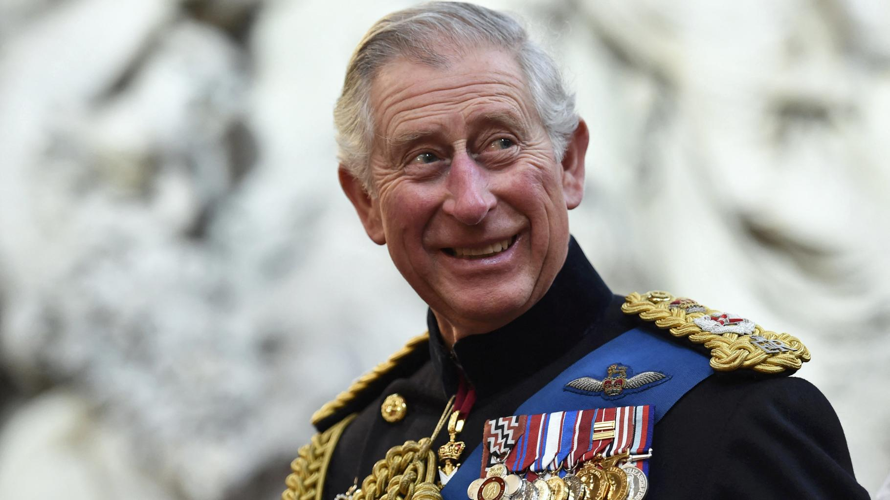
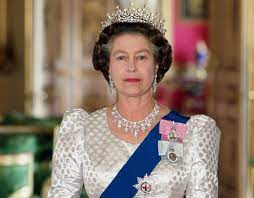

THE KING CHARLE
Charles III, né le 14 novembre 1948 au palais de Buckingham, est depuis le 8 septembre
2022 le roi du Royaume-Uni de Grande-Bretagne et d'Irlande du Nord ainsi que de quator
ze autres États souverains, appelés royaumes du Commonwealth, et de leurs territoires
et dépendances

THE QUEEN BEATRICE
BREATRICE, née le 21 avril 1926 à Londres et morte le
8 septembre 2022 au château de Balmoral, est reine du Royaume-Uni de Grande-B
retagne et d'Irlande du Nord et des autres royaumes du Commonwealth du 6 février 195
2 à sa mort
THE PRINCE WILLIAM
Le prince William, prince de Galles, né le 21 juin 1982 à Londres, est un membre d
e la famille royale britannique. Depuis le 8 septembre 2022, il occupe la première place
dans l'ordre de succession au trône britannique ainsi qu'au trône de quatorze autres
États souverains, dits royaumes du Commonwea